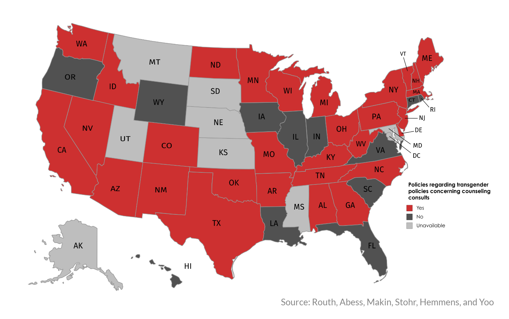

Transgender inmates ask state to transition behind bars: Critics claim cost and risk too high
For years, Jessica Anne Guillotte knew that something made her different from everyone around her. As a boy, she would wear girl’s panties under her clothes and gaze in envy at her sister’s pink, ruffled dress. But it wouldn’t be until 2013 that, at the age of 47, Guillotte decided to finally come out as transgender.
This would normally be difficult enough. But at that time, Guillotte, who was badly abused as a child, was 10 years into a prison sentence at the Massachusetts Treatment Center in Bridgewater for raping a 6-year-old boy. She didn’t understand the system and thought that once she was properly diagnosed with gender dysphoria, clinicians would allow her to start a physical transformation. Instead, she has faced “frustration, roadblocks, unprofessional mental health care and denial of female hormones,” she wrote in a letter about her life dated February 2018.
Guillotte’s story, which includes a clinician’s accusation that she’s making up her condition to secure an early release, is typical for transgender prisoners. Around the United States, corrections facilities are struggling to adapt to the needs of a growing number of inmates with gender dysphoria. The condition refers to the conflict between a person’s birth gender and the gender with which they identify. The diagnosis is often controversial to begin with, but add to that a prisoner asking for medical treatment and, in some cases, sexual reassignment surgery, and the complexities multiply.
Percentage of population identifying as transgender
From the prisoners’ point of view, they say the correctional system is forcing them to live in a humiliating situation. On the other side, detractors say prisoners – especially those in jail for taking a life – shouldn’t be the beneficiaries of any sort of humane treatment, especially for something some still view as cosmetic. Others question whether the claim of the condition is genuine and wonder whether it’s a ploy to transfer to women’s facilities.
But supporters counter that forcing anyone to ignore the condition is akin to denying them basic medical attention.
“I think gender dysphoria is the most misunderstood area of human behavior,” said Randi Ettner, a forensic psychologist and gender identity expert based in Evanston, Illinois. “It is in fact a serious medical condition that if untreated, results in serious [consequences] for the individual.”
To capture this dilemma, Northeastern University’s School of Journalism embarked on a yearlong project to solicit letters from transgender inmates in the Massachusetts correctional system. The project sought to acquire information about inmates’ lives before their crimes, and their lives in prison as they navigate a system that chronically fails to acknowledge their status. The project also includes individual profiles of four inmates and original copies of some the more than 40 letters received.
What emerged is that trans inmates such as Guillotte face a host of issues specific to their gender identity when entering prisons and jails. They are often classified on the basis of their external genitalia and are regularly misgendered, meaning their preferred pronouns are not used. They also face high rates of sexual abuse, and may be denied adequate medical treatment, such as hormone replacement therapy and gender-appropriate commissary items.
Although states deal with this increasing population in vastly different ways, the same issues are seen nationwide. The earliest policy addressing gender identity in corrections dates back to 2001, but most guidelines emerged starting in 2013. Some mention sexual reassignment surgery (SRS) while others only discuss mental health counseling.
Policy mentions counseling consults
Policy mentions hormone therapy continuation
Policy mentions hormone therapy initiation
Policy mentions sexual reassignment surgery
These services may not always be provided in practice. Georgia’s policy, for example, does not guarantee access to any kind of medical treatment or psychotherapy. Its staff policy does not require using preferred pronouns, but trans competency is part of employees’ training.
Delaware, considered one of the more progressive states in this matter, enacted a policy that provides access to psychotherapy, hormones, SRS, electrolysis and gynecological exams. Staff in this state must use preferred pronouns, respect trans people and go through competency training.
And although Massachusetts is considered progressive when it comes to providing legal protections for its trans residents, the same may not be true for its trans inmates.
Here, when an inmate identifies as gender dysphoric, a diagnostic process is triggered affecting housing, work and program assignments, according to the Massachusetts Department of Correction’s policy. Inmates’ surgical status and views regarding safety are taken into consideration. However, the DOC can override any recommendation for security reasons. Currently, of the approximately 34 inmates diagnosed with gender dysphoria in Massachusetts, every single one is housed according to their gender at birth.
Also, DOC staff is not required to use preferred pronouns or participate in competency training. The policy has not been updated since May 2016, which was before Gov. Charlie Baker signed a law protecting trans citizens from discrimination and allowing them to use the gender-segregated facilities that match their identity.
The DOC said in a 2016 statement to DigBoston that the statute does not apply to its facilities as they are not places “of public accommodation, resort or amusement” as defined by the law. This allows the department to ultimately choose where to place inmates.
“Most facilities refuse to allow trans prisoners who have not had genital surgery to be housed with inmates from their gender identity,” said Jason Lydon, the founder of Black and Pink, a Dorchester-based non-profit organization that arranges letter correspondence between LGBTQ prisoners and free citizens.
Elizabeth Matos, an attorney at Prisoners’ Legal Services of Massachusetts, added that correctional officers do not have to respect inmates’ requests to be strip-searched by a guard matching their gender identity.
Prison administrators face specific challenges when it comes to the trans population. A lack of consensus on what treatment is medically necessary complicates the administering of healthcare. Trans inmates are at an increased safety risk and could also present a risk to other inmates.
Dr. Eugene Simopoulos is the mental health services director at Albermarle-Charlottesville Regional Jail in Virginia. He has done extensive research on the management of trans inmates and said that trans individuals are often depressed and are nine times more likely to commit suicide.
“We're talking about a long-neglected and discriminated-against community,” he said. “And unfortunately in some correctional settings that response to them doesn't change.”
A dangerous environment to be different
When transgender women are placed into male facilities, they can become targets of unwanted sexual attention. “Transgender women, gender non-confirming folks and gay men are actually more likely than not to be assaulted during their incarceration,” said Lydon, who founded Black and Pink in 2005 after his own six-month incarceration in an LGBT-segregated section of Muscogee County Jail in Georgia for trespassing.
In general, he noted that prisoners do not elicit much sympathy from the public. Rape behind bars has often been fodder for humor – think “don’t drop the soap” – instead of being understood as a civil rights issue, he said
Because of her feminine appearance, male inmates assume that Katheena Nevia Soneeya, incarcerated at MCI – Shirley since 1982 on two counts of murder, is a gay man. As a result, she has fielded often-violent sexual advances from fellow inmates. One of her attempted rejections resulted in a beating where several of her teeth were knocked out. She’s also been scalded by scorned attackers. Nevertheless, prison staff has offered little to no protection to her.
In 2012, the Bureau of Justice Statistics estimated there were 3209 trans inmates in prisons across the United States. About 40 percent of trans inmates in prison who answered the survey said they had been sexually victimized, compared to 4 percent of all other inmates.

Janetta Johnson, a 54-year-old previously incarcerated trans woman and the executive director of the Transgender, Gender Variant and Intersex Justice Project in San Francisco, said she has yet to meet a trans person within the system who has not been sexually abused.
In 2009, she was sexually assaulted during a four-year sentence at Federal Correctional Institution, Sheridan in Oregon for drug distribution. There, she lived in one small room with five men up to 23 hours a day. On one occasion of many, three of her roommates assaulted her while the other two masturbated as they looked on.
Johnson added that prison officials often put trans prisoners into compromising situations, exposing them to assault “I asked to be placed into a cell by myself and they said that I was looking to be more privileged, but I wasn’t looking for privilege, I was looking to be safe,” she said.
This is also a problem in Massachusetts, where Lydon said prison staff might blame the victim who reports sexual assault or harassment.
Since 1989, Christine Mara Alexander, a trans woman, has been serving a life sentence for murder at MCI – Concord. She said another prisoner, convicted of rape, sexually assaulted her in 2012. She did not report the incident, fearing retaliation, but was interviewed when staff got wind of the assault.
“The interview turned into an interrogation and I was eventually charged in a ticket with sexual misconduct,” Alexander said in a letter. “The ticket was eventually dismissed, but the C.O.s and prisoners called me a […] wolf crier.”
According to a report by the Transgender Law Center in Oakland, California, rape, unnecessary strip searches, forced nudity and harassment are a daily reality for trans inmates.
Candace Shekinah Africa, a trans woman serving a life sentence at MCI – Norfolk for murder and arson, reported that during a 2013 strip search, her clothes were ripped off her body rather than cut and she had to stand naked while five or six men looked on and videotaped her. Strip searches can be videotaped to prevent abuse, however they are commonly conducted in the presence of only two security personnel, according to the DOC’s policy. The complaint she filed about the incident was ultimately dismissed.
Since the Prison Rape Elimination Act was created in 2003, officials have begun studying the issue of sexual abuse in detention. The PREA Standards, released in 2012, are meant to prevent situations like the one Africa said she experienced. They require, for instance, that facilities take into account where a person feels safest during classification.
In March 2016, the Department of Justice released a memo reasserting that trans prisoners cannot be housed based solely on their anatomy. The PREA Standards require a case-by-case assessment of each inmate.
But with research lacking since their implementation, the standards’ effectiveness has been debated. Simopoulos said that a PREA assessment is done for every new inmate at the Charlottesville jail, with particular attention paid to victims of sexual violence.
“I would say the PREA standards have been very effective and recognize the needs of this population,” he said.
But Cookie Bivens, a 47-year-old trans woman who served 30 years for murder in California State Prison resulting from a robbery in California, believes the standards need to be stronger. She said staff constantly misgender trans inmates and don’t recognize the PREA standards. “Some of the auditors don't really see what's actually happening,” she said.
A struggle to be recognized and respected
According to a 2013 Just Detention International report, trans people are often rejected by their families and discriminated against, leading many to turn to committing crimes for survival, such as stealing. Statistics show that trans people are over-represented in prisons and jails.
Some facilities resort to housing trans inmates in solitary confinement, to protect them or separate them from the general population. This isolation can cause significant mental distress and cut off access to jobs or programs.
Most inmates simply want their gender identity to be recognized. Staff and prisoners often intentionally refer to trans inmates by the wrong pronoun. Even after a legal name change, correctional officers will use the wrong name.
Michelle Lynne Kosilek, a transgender woman serving a life sentence at MCI – Norfolk for killing her wife in 1990, believes prison staff needs education on how to deal with trans inmates.
“I was called for a random urine test and when I asked if I could do it in the presence of a female staff member, the male officer refused, then called two more male officers to observe,” she said in a letter.“I sobbed uncontrollably until they threatened to forcibly undress me.”
Guillotte, the inmate in Bridgewater, also said she feels disrespected by inmates and staff who refuse to use proper pronouns or acknowledge how she sees herself.
“The therapy staff here do call me Ms. Guillotte, as they are required to,” she wrote in a letter. “However, most of the correctional officers here keep referring to me as ‘he’.“
Because trans people experience significant abuse, the use of the wrong pronouns or name can lead to posttraumatic stress, according to Janetta Johnson. She said misgendering is unending in the criminal justice system.
“That probably seems like a small thing to some corrections officials, but pronoun usage is important,” said Jesse Lerner-Kinglake, director of communications at JDI. “It is important to recognize someone’s identity and it can feel quite demeaning not to.”
A debate on the necessity of medical treatment
Lack of adequate care can have disastrous consequences, according to Ettner, the Illinois-based forensic psychologist. Inmates may develop mental health problems and potentially resort to performing their own surgeries, such as attempting to remove one’s penis and testicles.
“I wanted to be a girl so bad I decided to get a razor blade, dental floss and I was waiting for ice to dull the pain but the ice never showed,” Soneeya, the MCI – Shirley inmate, said in a letter. “So I tried to cut my penis off without the ice; I made one very painful cut and that was it, I had to stop cutting.”
For Soneeya and others, this act does not just reflect hatred toward one’s genitals. Ettner said that these attempts should not be interpreted as self-mutilation, suicide attempts or evidence of psychosis. “They are conscious, reasoned attempts to eliminate testosterone by removal of the target organs,” Jessica said in her letter.
“They are conscious, reasoned attempts to eliminate testosterone by removal of the target organs,” she said in her evaluation of Soneeya.
In the last decade, gender dysphoria has been recognized as a serious medical need. Medical treatment is only considered for transgender people experiencing dysphoria. Every trans person is different, and not all want or need treatment.
Milestones in the American transgender movement
This has resulted in some debate about what treatment is considered medically necessary for gender dysphoria. Oftentimes, this determination is made on a case-by-case basis.
In Massachusetts, the Gender Dysphoria Treatment Committee makes decisions regarding the care of inmates identifying as trans. A member of the committee, who could only speak on the condition of anonymity, said there is a lot of variation even within the prison system.
“We have some patients who have been transitioning for 30 or 40 years in the system, doing life sentences, and they are seeking gender confirmation surgery,” she said. “We have some that have been doing life sentences but don’t want the surgery. They’re happy with other accommodations that have been made.”
One obstacle is that many corrections health providers do not have the training to manage inmates with gender dysphoria.
In the last 30 years, four lawsuits have been brought against the Massachusetts DOC for access to hormone replacement therapy and SRS, according to the DOC. Other complaints have been filed for smaller accommodations.
Kosilek has been at the center of the issue for many years. While incarcerated, she has repeatedly sued the Massachusetts Department of Corrections for treatment of her gender dysphoria, including hormone replacement therapy and psychotherapy, which she has obtained.
In 2006, she sued the DOC on the basis that its refusal to provide SRS was a violation of her Eighth Amendment protection against “cruel and unusual punishment.” District Judge Mark Wolf ruled in Kosilek’s favor in 2012. However, the First Circuit Court of Appeals reversed the decision in 2014 and the Massachusetts Supreme Judicial Court chose not to hear Kosilek’s appeal.
Kosilek’s self-advocacy efforts have had an impact on society, according to Mason Dunn, the executive director of the Massachusetts Trans Political Coalition. “Michelle's case did raise awareness for issues of medical care for trans people in prison, and I believe will have an impact on policies for many years to come,” he said.
A strong opposition from the public and politicians
Judge Wolf’s initial decision faced a fair amount of backlash, both from politicians and the victim’s family. Former Massachusetts Republican Sen. Scott Brown released a statement at the time saying the judgment was an “outrageous abuse” of taxpayer dollars.
“We have many big challenges facing us as a nation, but nowhere among those issues would I include providing sex change surgery to convicted murderers," he said.
In 2008, Brown and other Republican lawmakers filed legislation to ban the use of public funds to pay for SRS for prison inmates. The amendment did not pass. Then-Democratic Senate candidate Elizabeth Warren also said it was not a “good use of taxpayer dollars” in a radio interview.
House Republican Republican Leader Bradley Jones doubted the court’s finding that SRS was a medically necessary procedure. “It’s one thing to say, ‘I have cancer and am in need of treatment,’” he said to the Associated Press. “It seems to be more medically desirable than a necessity.”
Massachusetts Senate minority leader Bruce E. Tarr and others introduced another bill in 2013, asking that no public funds be spent on SRS or hormone replacement therapy except for a use other than preparation for SRS for any inmate. This second legislative effort was also unsuccessful.
Former Democratic Gov. Deval Patrick appealed the decision, saying the security of Kosilek and other inmates might be jeopardized by the surgery. In a radio interview, he said that the appeal was not reflective of a point of view about gender dysphoria.
The safety of transgender inmates, other inmates and correctional staff are often at the heart of the discussion. The DOC stated they couldn’t guarantee Kosilek’s safety in any facility after surgery, arguing she would be at risk of sexual assault in a male prison and at risk of being assaulted and assaulting other inmates in a female prison.
Another concern is the potential for people to abuse the system. Simopoulos said it is possible that some few individuals might use the transition from male to female as an opportunity to be housed in a female unit to prey on potential victims.
“So it's very important to identify those who legitimately have been given a diagnosis versus those who may be predatory,” he said. “The jail has to keep everybody safe.”
The gender dysphoria committee member agreed that there are some patients within the system that feign gender dysphoria because they are looking for single-cell housing or a secondary gain, but it is not a significant problem.
At the time of the appeal, former Democratic Massachusetts U.S. Rep. Barney Frank said the issue was about Kosilek being a convicted murderer, not that she is trans.
The niece of Cheryl McCaul, Kosilek’s victim, agrees. Laura Brandel, 47, of Plymouth, said she will never forget the trial pictures of what Kosilek did to her aunt, who was Kosilek’s wife. She believes Kosilek deserves only the minimum necessary treatment.
“He’s got a headache? Sure, give him a Tylenol. He cuts his finger? Give him a stitch,” she said. “But to choose a life of murder and expect us people to pay for it, well that’s bullshit. He should’ve thought about his sex change before he killed my aunt.”
On the other hand, Brandel thinks trans people in society who have the will to transition, are hard-working citizens and have access to insurance should be able to obtain whatever care they want and need.
A divided outlook at what comes next
As transgender visibility rises, so does awareness of the prejudices and issues trans people face in a variety of settings. With only about 0.6 percent of the adult population in the United States identifying as trans, it is still quite rare.
“We're talking about a very, very small percentage of the population,” Simopoulos said. “We're not going to see immediate upheaval in the way things are done because many jails and prisons aren’t having to confront the situation and the challenges that come with it.”
Proportion of transgender prison
inmates nationwide, 2011-2012
Proportion of inmates with Gender Dysphoria
in Massachusetts
He added that the correctional setting has always lagged behind social dialogue but administrators are much more knowledgeable now about LGBTQ needs, although there is still a long way to go.
Ettner believes correctional staff needs to be educated on how to deal with LGBTQ inmates and follow the best standards of care. To that effect, the Bureau of Prisons released a new employee manual on Jan. 18, 2017, laying out several protections for trans inmates in federal prisons. The manual calls for specialized training on how to treat trans inmates and requires that housing placements give serious consideration to where inmates feel they would be safest.
Concord inmate Christine Mara Alexander believes there is plenty of room for change in the system. She said people susceptible to harm by others should be given more of a credible voice and the DOC should send a message to those who want to harass LGBTQ prisoners that it will not be tolerated.
“The simple idea of recognizing someone’s gender identity in the system, formally, is a very important and significant step,” Elizabeth Matos, an attorney at Prisoners’ Legal Services of Massachusetts, said. “We would see a lot of changes from that. “
In January 2017, Shiloh Heavenly Quine, a 58-year-old serving a life sentence for murder in California, became the first U.S. inmate to receive state-funded sex reassignment surgery. The landmark legal settlement led the state to set standards for trans inmates to apply to receive SRS. Quine was moved to a women’s prison following the operation.
Although this case represents a milestone for trans inmates’ rights, some disagreed with the decision. The daughter of Quine’s victim objected to inmates getting taxpayer-funded surgery that is not readily available to non-criminals, regardless of the cost. California officials have since received 64 other inmate requests for SRS and approved four.
“I think change is coming,” the gender dysphoria committee member said. “Massachusetts is a very progressive state, but yet in this area we are very antiquated. I’m hoping for some better changes in 2018. “